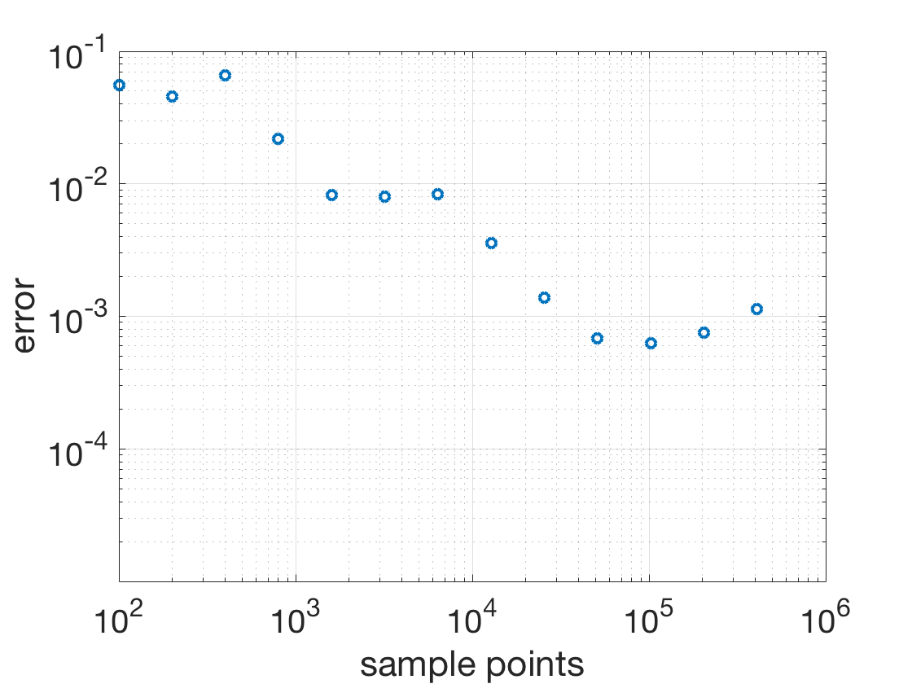

Additional Examples 9.1
1 Approximate the average value of \(f(x) = \frac{1}{1+x^2}\) on the interval \([0,1]\) using one period of the linear congruential random number generator with \(a=7, b=0, m=11.\) Compare with the exact value.
The average value of \(f(x) = \frac{1}{1+x^2}\) on the interval \([0,1]\) is \(\int_0^1 \frac{1}{1+x^2}\ dx,\) which evaluates to \(\arctan 1 - \arctan 0 = \pi/4 \approx
0.7854.\) One period of the random number generator produces the integers
\[\begin{array}{c}
3\\
10\\
4\\
6\\
9\\
8\\
1\\
7\\
5\\
2
\end{array}
\]
which are divided by \(m=11\) to yield random numbers \(u_1,\ldots, u_{10}\) in the unit interval. The average value of \(f(x)\) is
\[\frac{1}{10} \sum_{i=1}^{10} \frac{1}{1+u_i^2} \approx 0.7886.\] The error is approximately \(0.0032.\)
2 (a) Use calculus to find the area of the region inside the circle of radius 1 centered at \( (1,0)\) but outside the ellipse \(x^2+4y^2 = 4.\) (b) Find a Monte Carlo approximation of the area.

The circle and ellipse intersect at \(x=2/3\) and \(x=2\). The region consists of two slices with equal area, so it suffices to find the slice in the first quadrant. The area of this slice is
the difference between the circle and ellipse, namely
\[ \int_{2/3}^2 \left( \sqrt{1-(x-1)^2} - \sqrt{1-x^2/4} \right)\ dx, \]
which amounts to
\[ \frac{\pi}{4}+\frac{\arcsin 1/3}{2}+\frac{\sqrt{2}}{9} - \left[ \frac{\pi}{2}-\arcsin 1/3 -\frac{2\sqrt{2}}{9} \right] =
- \frac{\pi}{4}+\frac{3\arcsin 1/3}{2} +\frac{\sqrt{2}}{3} \approx 0.195762.
\]
The region has area twice this value, or \[-\frac{\pi}{2}+3\arcsin 1/3 +\frac{2\sqrt{2}}{3} \approx 0.391523. \]
(b) The slice in the first quadrant is contained in the rectangle \([0,2]\times[0,1]\), so we carry out a Type 2 Monte Carlo estimate by producing uniform random points in the rectangle, counting the proportion that lie inside the circle and outside the ellipse, and multiplying by 2, the area of the rectangle, to estimate the area of the slice. Multiplying by 2 yields the total area of the two slices. The plot shows the error versus the number of sample points in the Monte Carlo estimate.
